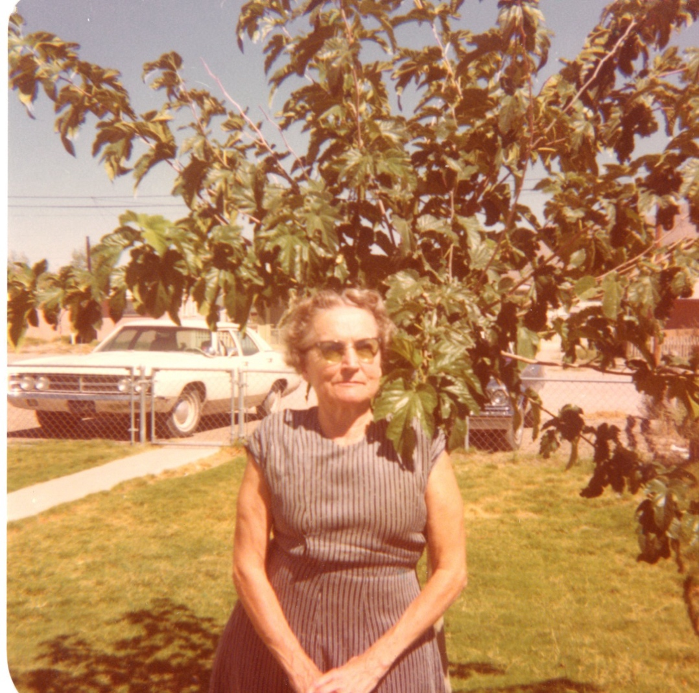

19 December 1908 – 6 June 1983

Biography of Will T. Cooley and MaryEllen Osborne Cooley
Poem Books
The Sunnyside - A Verse Book (1983, web version)
- Front Matter – About the Author, Table of Contents
- For The Young at Heart – 37 Poems
- For Special Days – 28 Poems
- Tributes To Men – 14 Poems
- To Favorite Friends – 27 Poems
- For Devotion – 24 Poems
- Rollicking Rhymes (pdf version) – Mary Ellen Cooley, 1974 [Full Book]
- The Sunnyside (pdf version) – A Verse Book by MaryEllen Cooley, 1983 [Full Book]